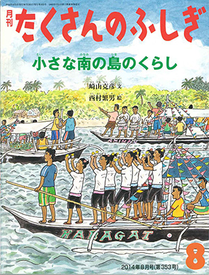

新しい本の出版のお知らせです

私の書いた新しい本が、子どもの本の出版社「福音館書店」から、６月の下旬に出版されます。
タイトルは『小さな南の島のくらし』です。
この本は、「たくさんのふしぎ」という月間誌の、８月号として出版されます。
６月の下旬から７月いっぱいは、全国の大きな書店の店頭（児童書の売り場、または雑誌売り場）でお求めになることができます。
もし店頭にない場合は、書店さんに、「福音館の、たくさんのふしぎ８月号の、『小さな南の島のくらし』を注文したいのですが」と言っていただければ、取り寄せてくれます。
この本は、小学校の中級の子どもたちのために書いたのですが、大人の方々が読んでも、楽しんで、学んでいただける本だと思います。
「たくさんのふしぎ」は、絵本のようなつくりの月刊誌です。
絵を西村繁男さんに描いていただき、ほんとうにすばらしい出来映えになっています。西村さんは『夜行列車』や『絵で読む広島の原爆』などの絵本作家で、私の大好きな、尊敬をしている方です。
私は、日本の現在の暮らしは、本来私たちが一緒に暮らさなければならない「自然」と、まったくかけ離れてしまっていると思っています。カオハガンの暮らしは、人間が本来あるべき「自然とともにある暮らし」です。そんな中で、カオハガンの人たちは、幸せな暮らしを送っているのです。
カオハガン島の暮らしのすばらしさ、そこから学ぶべきことを、西村さんのすばらしい挿絵のちからをお借りして、しっかりと表現できたと確信しています。
ぜひ皆様にお読みいただいて、そしてできれば、カオハガン島にいらっしゃっていただきたいと願っております。よろしくお願いを申し上げます。
『小さな南の島のくらし』を楽しんでください。
また、私は昨年の９月に、同じ福音館書店から、小学校入学前の子どもたちのためのシリーズ「こどものとも」の一冊として、『サンゴのしまのポポ』を出版しています。
カオハガン島に伝わる昔話をもとにしたお話を、川上越子さんに挿絵を描いていただいて表現した、とても楽しい絵本です。
この本も、書店で、「たくさんのふしぎ」と同じように取り寄せていただけますので、ぜひ、お子さまとご一緒にお読みください。
ありがとうございます。
２０１４年６月２５日
崎山 克彦